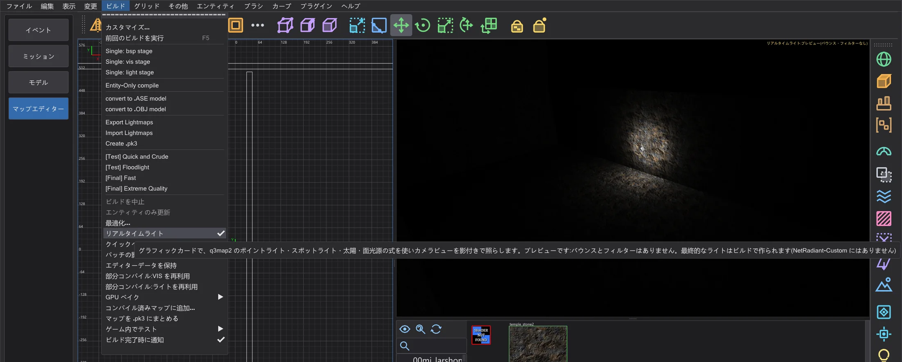
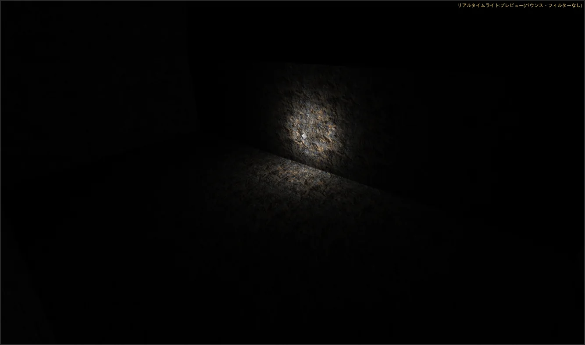
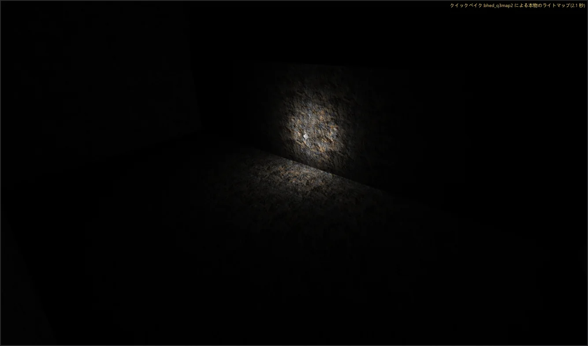

マップエディター:速度とリアルタイムライト
作りながら光を確認できます。リアルタイムライト はグラフィックカードでカメラを照らし、クイックベイク はバックグラウンドでマップをビルドして本物のライトマップを表示します。ビルドと編集は速くなりましたが、結果は以前と同じです。
リアルタイムライト#

- 1
ビルド > リアルタイムライト をオンにします。カメラ(テクスチャ表示)がマップのライト、つまりポイントライト・スポットライト・空シェーダーの太陽(
q3map_sun)・面光源(q3map_surfacelight)で、q3map2 -light の式を使い影付きで照らされます。 - 2
ライトを動かしたりキーを変えたりすると、カメラはすぐに追従します。1 フレームあたり最大 64 個のライト(カメラで最も強いもの)が照らし、そのうち 32 個は影キューブ付きです。

クイックベイク#
- 1
ビルド > クイックベイク をオンにします。最後の変更から 2 秒後に、bhed_q3map2 が一時フォルダーで低優先度のままマップをビルドします(
-meta、リークがなければ-vis -fast、-light -fast)。エディターは滑らかなままです。 - 2
完了すると、カメラにこのビルドの本物のライトマップが表示され、右上に クイックベイク:bhed_q3map2 による本物のライトマップ( 秒) と表示されます。変更すると実行中のビルドは中止され、間を置いて新しいビルドが始まります。マップとその隣の .bsp には触れません。

クイックベイクは、同じスイッチでコマンドラインから bhed_q3map2 を実行した場合と同じライトマップ・ライトグリッド・可視性を書き出します(セルフテストがファイルを比較しています)。フルビルドより速いのは -fast を使いバウンスを行わないためです。完成版には ビルド メニューを使ってください。
速くなった点#
すべての変更は前後で計測し(3 回の中央値、低優先度、同じマップ)、結果は同じです。-bsp と -light の .bsp はステージ 6 の 1 スレッドビルドとバイト単位で一致し、保存されるマップも同一です。
- -light はライトマップ(ライトごとにブロック単位で計算し、適応スーパーサンプリングは予測してから正確に確認)とライトグリッドに全コアを使います。
- -bsp:T ジャンクション修正は並列に探索して順に適用します。ライトグリッドの同じ点は全点の探索ではなくバケットで見つけます。
- -vis は NetRadiant-Custom と同じです。複数スレッドではビルドごとにわずかに異なることがあり、
-threads 1では常に同じです。複数スレッドで同じ結果にする方法を 2 つ試して計測しましたが、どちらも遅くなりました。 - エディター:選択の反転、ビューの選択判定、オプティマイザーの NPC ファイル(バックグラウンドで読み込み)。
| 処理 | マップ | NetRadiant-Custom | 以前(ステージ 6) | 現在 |
|---|---|---|---|---|
| BSP (全スレッド) | duel_pit | 0.20 s | 0.20 s | 0.20 s |
| VIS (全スレッド) | duel_pit | 0.15 s | 0.10 s | 0.10 s |
| LIGHT (全スレッド) | duel_pit | 0.66 s | 0.66 s | 0.61 s |
| BSP (1 スレッド) | duel_pit | 0.20 s | 0.20 s | 0.20 s |
| VIS (1 スレッド) | duel_pit | 0.15 s | 0.15 s | 0.15 s |
| LIGHT (1 スレッド) | duel_pit | 3.02 s | 3.33 s | 3.08 s |
| BSP (全スレッド) | mp__duel1 | 0.36 s | 0.31 s | 0.31 s |
| VIS (全スレッド) | mp__duel1 | 0.15 s | 0.11 s | 0.10 s |
| LIGHT (全スレッド) | mp__duel1 | 2.53 s | 2.99 s | 1.92 s |
| BSP (1 スレッド) | mp__duel1 | 0.35 s | 0.31 s | 0.31 s |
| VIS (1 スレッド) | mp__duel1 | 0.20 s | 0.15 s | 0.16 s |
| LIGHT (1 スレッド) | mp__duel1 | 8.72 s | 9.68 s | 9.63 s |
| BSP (全スレッド) | t1_inter | 0.31 s | 0.26 s | 0.26 s |
| VIS (全スレッド) | t1_inter | 0.15 s | 0.10 s | 0.10 s |
| LIGHT (全スレッド) | t1_inter | 0.31 s | 0.26 s | 0.31 s |
| BSP (1 スレッド) | t1_inter | 0.30 s | 0.25 s | 0.26 s |
| VIS (1 スレッド) | t1_inter | 0.15 s | 0.11 s | 0.10 s |
| LIGHT (1 スレッド) | t1_inter | 0.31 s | 0.31 s | 0.31 s |
| BSP (全スレッド) | md_ch_ben | 0.81 s | 0.71 s | 0.76 s |
| VIS (全スレッド) | md_ch_ben | 2.77 s | 2.27 s | 2.23 s |
| LIGHT (全スレッド) | md_ch_ben | 3.73 s | 4.24 s | 2.58 s |
| BSP (1 スレッド) | md_ch_ben | 0.86 s | 0.71 s | 0.71 s |
| VIS (1 スレッド) | md_ch_ben | 30.53 s | 24.90 s | 24.60 s |
| LIGHT (1 スレッド) | md_ch_ben | 12.66 s | 12.65 s | 12.76 s |
| BSP (全スレッド) | kejim_post | 4.74 s | 4.59 s | 4.14 s |
| VIS (全スレッド) | kejim_post | 745.40 s | 621.47 s | 573.70 s |
| LIGHT (全スレッド) | kejim_post | 9.18 s | 10.28 s | 7.21 s |
| BSP (全スレッド) | duel_mos_espa | 53.35 s | 44.86 s | 19.57 s |
| 処理 | マップ | 以前(ステージ 6) | 現在 |
|---|---|---|---|
| 選択の反転(すべて選択) | duel_mos_espa | 29.74 s | 5.2 ms |
| 選択の反転(すべて選択) | kejim_post | 1.34 s | 0.7 ms |
| 選択の反転(すべて選択) | md_am_sith | 1.36 s | 0.8 ms |
| .bsp を開く(逆コンパイル) | duel_mos_espa | 7.71 s | 7.98 s |
| .bsp を開く(逆コンパイル) | kejim_post | 2.01 s | 2.64 s |
| .bsp を開く(逆コンパイル) | md_am_sith | 3.29 s | 3.42 s |
| .map の読み込み | duel_mos_espa | 1.31 s | 1.29 s |
| .map の読み込み | kejim_post | 662.5 ms | 717.4 ms |
| .map の読み込み | md_am_sith | 805.6 ms | 827.7 ms |
| テクスチャの読み込み | duel_mos_espa | 1.64 s | 1.80 s |
| テクスチャの読み込み | kejim_post | 4.2 ms | 821.6 ms |
| テクスチャの読み込み | md_am_sith | 1.93 s | 2.16 s |
| .map の保存 | duel_mos_espa | 815.8 ms | 745.4 ms |
| .map の保存 | kejim_post | 142.5 ms | 173.7 ms |
| .map の保存 | md_am_sith | 175.9 ms | 189.6 ms |
| すべて移動 | duel_mos_espa | 285.1 ms | 329.4 ms |
| すべて移動 | kejim_post | 53.2 ms | 72.0 ms |
| すべて移動 | md_am_sith | 62.9 ms | 68.0 ms |
| 移動を元に戻す | duel_mos_espa | 294.1 ms | 353.0 ms |
| 移動を元に戻す | kejim_post | 26.2 ms | 36.4 ms |
| 移動を元に戻す | md_am_sith | 33.3 ms | 32.6 ms |
| CSG Subtract を元に戻す | duel_mos_espa | 171.1 ms | 207.4 ms |
| CSG Subtract を元に戻す | kejim_post | 8.6 ms | 7.9 ms |
| CSG Subtract を元に戻す | md_am_sith | 12.1 ms | 10.1 ms |
| オプティマイザーの起動 | duel_mos_espa | 48.6 ms | 39.2 ms |
| オプティマイザーの起動 | kejim_post | 10.2 ms | 13.1 ms |
| オプティマイザーの起動 | md_am_sith | 14.7 ms | 11.8 ms |
| オプティマイザーのチェック | duel_mos_espa | 1.47 s | 1.34 s |
| オプティマイザーのチェック | kejim_post | 162.4 ms | 201.8 ms |
| オプティマイザーのチェック | md_am_sith | 303.7 ms | 257.4 ms |
| マップエディターへの切り替え(ゲームデータの準備まで) | - | 273.3 ms | 258.1 ms |
| プレビュー:シーンの準備(md_am_sith) | - | 1.44 s | 1.40 s |
| プレビュー:シーンのフレーム時間(平均) | - | 15.0 ms | 15.0 ms |
| プレビュー:フリーフライトのフレーム時間(平均) | - | 8.2 ms | 8.1 ms |
kejim_post の「テクスチャの読み込み」が以前とても速かったのは、ステージ 6 がこの実行で Jedi Outcast をフォルダーなしで読み込んでいたため(シェーダー 0 個、すべての面が代替画像。ステージ 7 で修正した不具合)です。現在は 1187 個のシェーダーとその画像を読み込みます。変更していない処理は実行ごとに約 20 % 変動します。